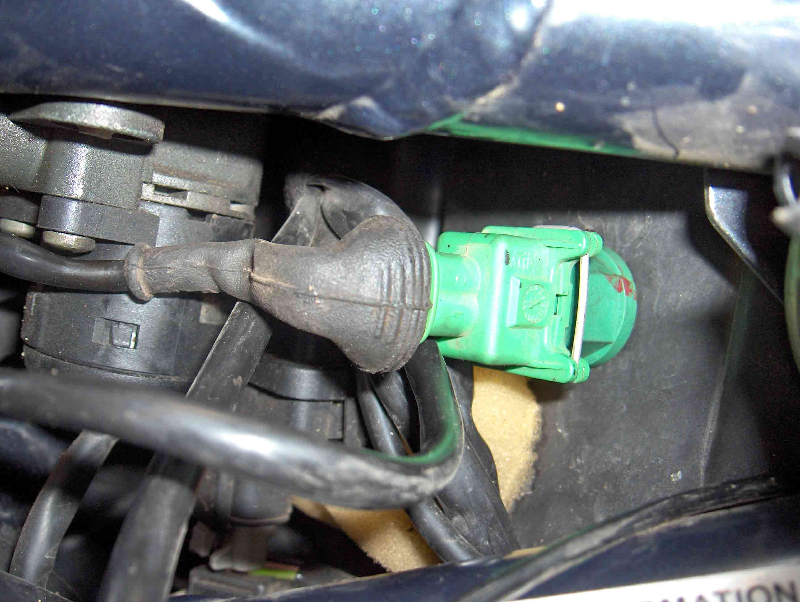

Moving the Induction Air Temperature Sensor
(02 Dec 07)
The temperature sensor in the the airbox cover gets covered in crap. Oil from the filter drains into that
corner, and traps all manner of rubbish - bees, seeds & grass, to name a few. The sensor couldn't possibly
read accurately, or quickly, when covered with so much garbage, so I bit the bullet and shifted it. It is
now mounted on the front wall, above the left hand air inlet, with the small plastic protector vertical.
Only been up Mt Stromlo once since, but the new position doesn't appear to have upset her at all.
Hasn't stalled either, but she has only done that to me a handful of times in 16000k, so I can't say if this
has made any difference (yet).
Update 4 May 2006: She stalled on me last night as I was pulling into my driveway. So moving the sensor didn't
solve that problem - from 2nd gear, power off, clutch in, select neutral .... eerie silence.
_
The Airbox after 4,500kms. On the right is a closeup of what the sensor must deal with.
_
The new sensor position inside, and outside, on the right.